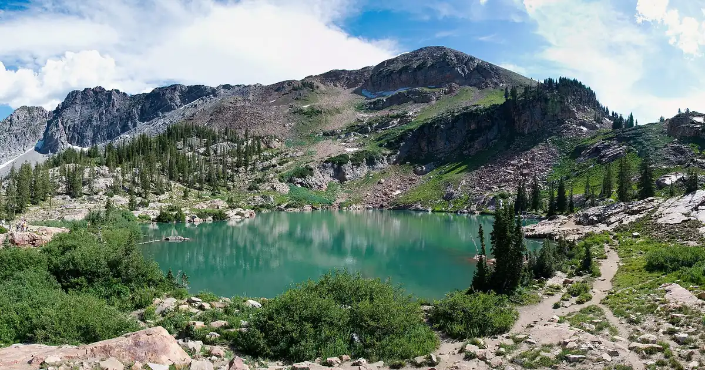

Anreise nach Snowbird: Little Cottonwood Canyon, Traktionsregel und Skibus
Snowbird liegt am Ende einer einzigen Straße, des Little Cottonwood Canyon (SR-210), den es sich mit Alta teilt. An einem klaren Tag ist die Anfahrt leicht, an einem Sturmtag langsam: Reifen und Abfahrtszeit zählen mehr als die Entfernung.
Die Live-Schneeprognose für Snowbird in der SnowScope-AppSchneehöhen, Pulverschnee-Alarme und 3D-Karte, gratis.
Die Entfernung: nah an der Stadt
Snowbird liegt etwa 29 Meilen (47 km) vom internationalen Flughafen Salt Lake City entfernt, 24 Meilen (39 km) vom Stadtzentrum und 4 Meilen (6 km) östlich des Vororts Sandy, wo der Canyon beginnt. Ab dem Canyoneingang gibt es nur einen Weg hinauf und denselben zurück: UDOT erinnert daran, dass die Straßen der Cottonwood Canyons im Winter Sackgassen sind, also nimm mit, was du für den Tag brauchst.

Vor der Auffahrt: die Traktionsregel
Wenn die Warnleuchten vor den Canyons blinken, gilt auf SR-210 und SR-190 die Traktionsregel (traction law), und UDOT kann sie bis zu 24 Stunden vor einem Sturm in Kraft setzen. Die Reifen brauchen mindestens 5/32 Zoll Profil. Allrad- und 4x4-Autos brauchen mindestens M+S-Reifen an allen Rädern; Autos mit Zweiradantrieb Winterreifen mit Schneeflockensymbol (3PMSF) an allen Rädern oder Ketten bzw. Schneesocken an zwei Antriebsrädern.
Mietwagen in Salt Lake City haben oft Ganzjahresreifen: Frag bei der Buchung nach den Reifen oder nimm den Bus.
Auto stehen lassen: der UTA-Skibus
Die UTA-Linie 994 und die Canyon-Service-Linien fahren durch den Little Cottonwood Canyon nach Snowbird und Alta. Die meisten Skibuslinien sind vom 6. Dezember bis 11. April geplant, UTA-Linien können früher starten, wenn die Skigebiete früher öffnen; prüfe vor der Fahrt die Transit-App oder UTA. An einem Pulvermorgen ersparst du dir mit dem Bus auch die Parkplatzsuche.
Am Tag selbst: der Straßenstatus
UDOT veröffentlicht einen Live-Status für SR-190 und SR-210 mit Sperrungen und Traktionsauflagen sowie Webcams. Erscheint kein Beitrag, sind die Straßen ohne geplante Sperrungen oder Auflagen offen. Schau vor der Abfahrt aus dem Tal hinein und noch einmal vor der Talfahrt am Nachmittag.
Warum sich die Fahrt lohnt
Die Canyonstraße führt zu viel Schnee. Unsere Schneehistorie in mittlerer Höhe, 9.357 ft (2.852 m), ergibt ein übliches Saisonmaximum von etwa 96 in (244 cm) und an etwa 220 Tagen eines typischen Winters Schnee am Boden, am meisten meist im März. Das sind Modellwerte vergangener Winter, keine Meldungen des Skigebiets.
Tipps für Skifahrer
- Prüfe den UDOT-Status der Cottonwood Canyons vor der Auffahrt und vor der Talfahrt.
- Keine passenden Reifen? Nimm die UTA-Linie 994 oder den Canyon-Service-Bus.
- An Sturmtagen früh losfahren: Die einzige Canyonstraße füllt sich schnell.
- Für Touren ab dem Canyon zuerst den Bericht des Utah Avalanche Center lesen.
Quellen und Nachweise
- Utah Department of Transportation (UDOT), Cottonwood Canyons - Roads to Recreation (retrieved 8 November 2026). cottonwoodcanyons.udot.utah.gov/
- UDOT, Traction Law for Big and Little Cottonwood Canyons (retrieved 8 November 2026). cottonwoodcanyons.udot.utah.gov/traction-law/
- Utah Transit Authority (UTA), Ski Service (retrieved 8 November 2026). www.rideuta.com/Rider-Info/Ski-Service
- Wikipedia, 'Snowbird, Utah' (retrieved 8 November 2026). en.wikipedia.org/wiki/Snowbird,_Utah
Zu diesen Zahlen
Schneewerte: SnowScope-Schneehistorie, 46 vergangene Winter (1980-81 bis 2025-26) auf drei Höhen des Skigebiets, ein höhenkorrigiertes Modell der Vergangenheit (eine Schätzung für eine Fläche, keine Meldungen des Skigebiets). Lifte, Pisten und Anreise: die Quellen unten, geprüft am angegebenen Datum.
Offizielle Lawinenlageberichte: Utah Avalanche Center
Diesen Bericht zitieren
Für Forschung, Lehre oder Presse: Zahlen und Grafiken sind unter CC BY 4.0 mit dieser Quellenangabe frei nutzbar.
SnowScope (2026), Anreise nach Snowbird: Little Cottonwood Canyon, Traktionsregel und Skibus, https://snowscope.app/blog/de/2026/11/how-to-get-to-snowbird-little-cottonwood-canyon.html, abgerufen am 2026-11-09
SnowScope (Atlas Labs). (2026, November 9). Anreise nach Snowbird: Little Cottonwood Canyon, Traktionsregel und Skibus. SnowScope snow reports. https://snowscope.app/blog/de/2026/11/how-to-get-to-snowbird-little-cottonwood-canyon.html
BibTeX
@misc{snowscope2026howtogettosnowbirdlittle,
author = {{SnowScope (Atlas Labs)}},
title = {Anreise nach Snowbird: Little Cottonwood Canyon, Traktionsregel und Skibus},
year = {2026},
month = nov,
howpublished = {\url{https://snowscope.app/blog/de/2026/11/how-to-get-to-snowbird-little-cottonwood-canyon.html}},
note = {Published 2026-11-09 18:47 UTC; accessed 2026-11-09}
}· CC BY 4.0 · Methoden, Daten und Werkzeuge →
Snowbird: Schnee und Temperatur nach Höhe, dieser Winter vs letzter (Werkzeuge) →
Snowbird folgen
Gratis: eine Nachricht, wenn Neuschnee kommt, und jeden Morgen die Vorhersage.
Weitere Schneeberichte

Skibedingungen in Deer Valley am 13. November 2026: noch kein richtiger Schnee am Boden, rund 4 in nahe dem Gipfel durch den Sturm am Wochenende, Regen auf der tiefen East-Village-Seite unter etwa 6,700 bis 7,600 ft und 11 in oben über die Woche.

Schnee-Check für Bogus Basin am 13. November 2026: noch kein Schnee am Boden, am Wochenende Regen und nasser Schnee mit einer Schneefallgrenze bei 6,300 bis 6,800 ft, danach kältere Luft und rund 8 in am Gipfel bis nächste Woche.

Schneevorhersage für Alpental am 13. November 2026: etwa 1 in am oberen Berg, am Wochenende Regen fast bis zum Gipfel bei einer Schneefallgrenze von 5,400 bis 5,600 ft, nächste Woche oben 4 bis 5 in Regen und Schnee gemischt.